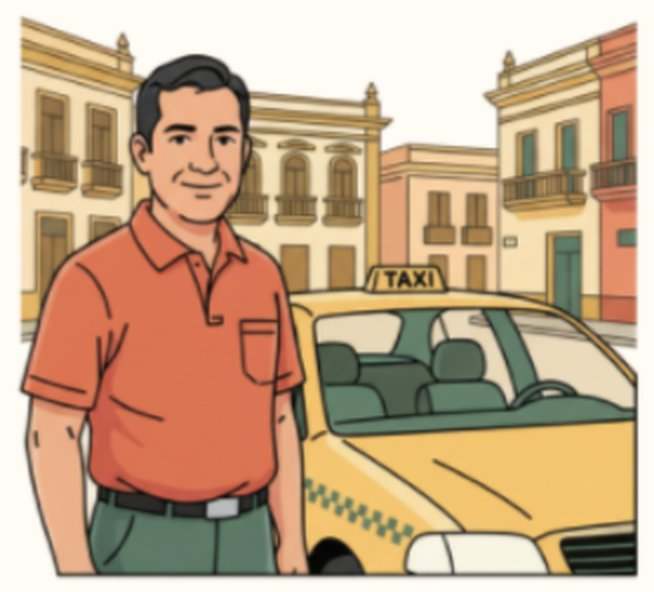
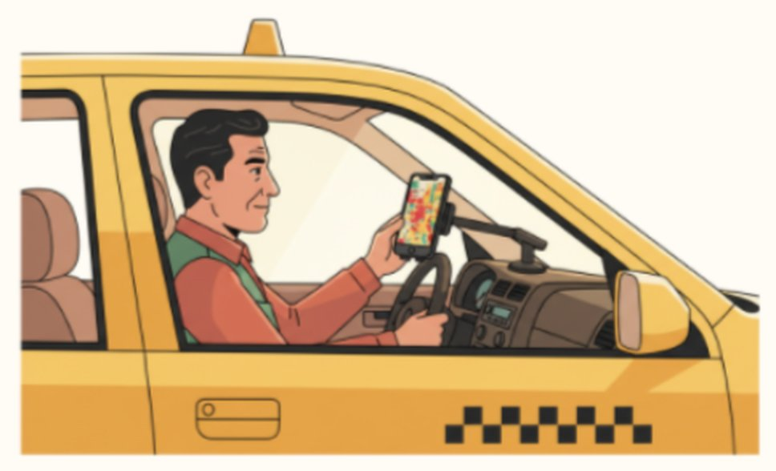

Callao · Seguridad ciudadana
Calles Seguras es un mapa de calor que muestra, por colores, en qué zonas y a qué hora se concentran los robos en el Callao, para que vecinos, conductores y comerciantes decidan mejor por dónde moverse.
Ver el mapaCómo funciona

El problema
17
de cada 100
Durante el 2025, cerca de 17 de cada 100 personas de 15 años a más en el Callao fueron víctimas de robo o intento de robo de dinero, cartera o celular.
Existen, pero están en tableros y reportes que una persona común no revisa ni sabe interpretar.
Avisan rápido, pero la información llega desordenada y se pierde entre mensajes.
Datos sueltos que casi siempre llegan cuando el robo ya ocurrió.
Fuente del dato: Instituto Nacional de Estadística e Informática (INEI).
Elige un horario y toca un sector para ver su nivel de riesgo, la franja más peligrosa y una recomendación.
Prototipo · datos de ejemploMapa esquemático y cifras ficticias para probar la idea con usuarios. La versión final usará datos del Mininter, el INEI y el Gobierno Regional del Callao.
Tres pasos, desde el celular o la computadora.
Mañana, tarde, noche o todo el día. El riesgo cambia según la hora.
Los colores muestran dónde se concentran los robos. Toca un sector para ver el detalle.
Planifica tu ruta con la recomendación y reporta lo que veas para mejorar el mapa.
Proyecto del curso Gestión de Proyectos, Escuela de Ingeniería Industrial, Universidad César Vallejo, 2026.